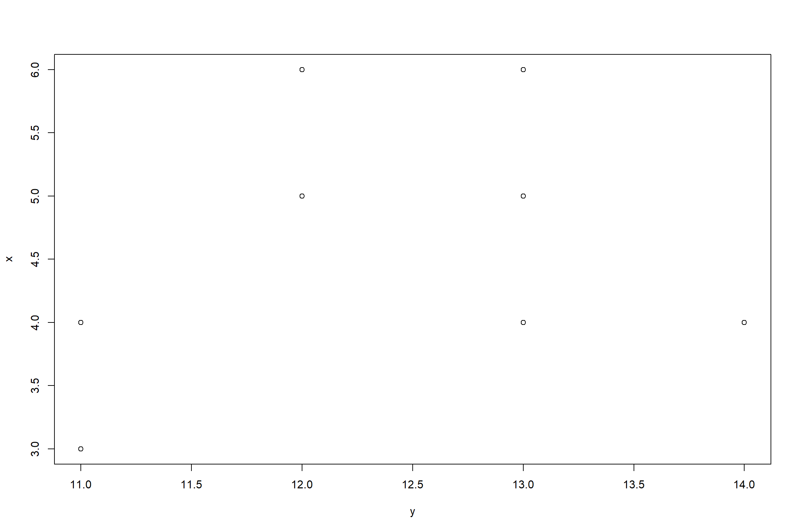

Lab 3
Correlation
Correlaton refers to the strength of the relationship between two different variables.
Correlation is often represented by the letter r.
The equation for correlation(r) looks a little intimidating but if it is broken down into steps, it is much more managable.
\(r = \frac{n(\sum(xy)-(\sum x)(\sum(y))}{\sqrt{n \sum x ^2-(\sum x)^2][n \sum y ^2-(\sum y)^2]}}\)
Let’s take a closer look at the denominator first:
- \(n(\sum(xy)-(\sum x)(\sum(y))\)
The first thing we should do is have a dataset to work with:
x = 5, 5, 4, 4, 5, 5, 4, 5, 3, 5, 6, 6, 5, 6, 6
y = 13, 12, 13, 14, 13, 12, 11, 12, 11, 12, 13, 12, 12, 13, 13
Each dataset has 15 data points. When you work with larger datasets you may want to avoid having to count each number so r has a built in function called length() which will return the number of items in your variable. We know our first term is 15 so we will add that to the formula.
- \(r = \frac{15(\sum(xy)-(\sum x)(\sum(y))}{\sqrt{15 \sum x ^2-(\sum x)^2][15 \sum y ^2-(\sum y)^2]}}\)
The next part is asking us to compute the sum of the values of x multiplied by the values of y and then add that to the formula.
x = c(5, 5, 4, 4, 5, 5, 4, 5, 3, 5, 6, 6, 5, 6, 6)
y = c(13, 12, 13, 14, 13, 12, 11, 12, 11, 12, 13, 12, 12, 13, 13)
xy=sum(x*y)
xy[1] 921- \(r = \frac{15(921)-(\sum x)(\sum(y))}{\sqrt{15 \sum x ^2-(\sum x)^2][15 \sum y ^2-(\sum y)^2]}}\)
Next we need to subtract this amount from the result from the product of the sum of all of the values of x and the sum of all the values of y.
x = c(5, 5, 4, 4, 5, 5, 4, 5, 3, 5, 6, 6, 5, 6, 6)
y = c(13, 12, 13, 14, 13, 12, 11, 12, 11, 12, 13, 12, 12, 13, 13)
sumx = sum(x)
sumy = sum(y)
sumx[1] 74sumy[1] 186- \(r = \frac{15(921-(74)(186)}{\sqrt{15 \sum x ^2-(\sum x)^2][15 \sum y ^2-(\sum y)^2]}}\)
Let’s just take care of the numerator for now.
num=(15*xy)-(sumx*sumy)
num[1] 51- \(r = \frac{51}{\sqrt{15 \sum x ^2-(\sum x)^2][15 \sum y ^2-(\sum y)^2]}}\)
Alright, now let us look at the denominator.
\({\sqrt{15 \sum x ^2-(\sum x)^2][15 \sum y ^2-(\sum y)^2]}}\)
You should notice that the denominator is sort of a mirror image, the first part handles x and the second part handles y.
- \(r = {\sqrt{15(376)-(\sum x)^2][15(2316))-(\sum y)^2]}}\)
Again, the same thing is being done to x and y. We are going to sum the values in x and then square them, and do the same to the values in y.
- \({\sqrt{15(376)-5,476][15(2316))-34,596]}}\)
Now we can clean up the denominator:
den = sqrt(((15*dsumx)-(ssx))*((15*dsumy)-(ssy)))
den[1] 153.675- \(r = \frac{51}{153.675}\)
Now divide
r = num/den
r[1] 0.3318692- \(r = 0.33\)
Before we start discussing what that means, let us see the other way of calculating r
x [1] 5 5 4 4 5 5 4 5 3 5 6 6 5 6 6y [1] 13 12 13 14 13 12 11 12 11 12 13 12 12 13 13corxy = cor(x,y)
corxy[1] 0.3318692That seems a lot easier than the eight steps we went through!
So we found that for our data, the r was equal to 0.3318692. This is a relatively weak correlation. In psychology you will likely never see correlations that are above .9. This obtained r of 0.3318692 would indicate some positive correlation. In order to obtain \(R^2\)we simply square the obtained r and get 0.1101372
Here is what a plot of the data looks like:
plot(x~y)
It would be hard to guess (avoid making guesses!) a correlation by just looking at this data. There are only 15 points, but we can tell they are not all in the same space, nor are they all randomly dispersed. So if we had to take a guess, we could assume that a slight correlation could be present.
Let us take a look at a data set with some meaning and more data points.
Linear Regression
Linear regression refers to an equation of the “best fitting line” that shows where a line could be placed that would best explain the relationship, if any, of your data.
The equation is as follows:
\(\hat{Y_x} = a_x + b_yx\)
Where \(\hat{Y}\) equals the predicted value of Y given X.
In order to find b:
\(b = \frac{n\sum XY -\sum X\sum Y }{n\sum X^2-\sum (X)^2}\) or \(b = \frac{\sum XY }{\sum X^2}\)
In order to find a:
\(a = \mathrel{\bar{Y}}-b\mathrel{\bar{X}}\)
Let us work with a sample set of data:
x = 20,25,30,35,40,45,50,55,60,65,70,75,80,85,90,95,100
y = 10.93,11.78,10.97,11.27,11.37,10.31,12.84,12.15,10.86,13.25,12.43,11.70,12.90 12.8,12.82,12.69,12.55
x = c(20,25,30,35,40,45,50,55,60,65,70,75,80,85,90,95,100)
y= c(10.93,11.78,10.97,11.27,11.37,10.31,12.84,12.15,10.86,13.25,12.43,11.70,12.90,
12.8,12.82,12.69,12.55)
x [1] 20 25 30 35 40 45 50 55 60 65 70 75 80 85 90 95 100y [1] 10.93 11.78 10.97 11.27 11.37 10.31 12.84 12.15 10.86 13.25 12.43 11.70
[13] 12.90 12.80 12.82 12.69 12.55- Solve for the numerator of
a - \(n\sum XY -\sum X\sum Y\)
- Solve for the denominator of
b - \(b = \frac{243.25}{n\sum X^2-\sum (X)^2}\)
- \(b = \frac{243.25}{10,200}\)
b=topb/botb
b[1] 0.02384804- Solve for
a - \(a = \mathrel{\bar{Y}}-b\mathrel{\bar{X}}\)
\(\hat{Y} = 10.546 + .0238x\)
\(\frac{\sum(X-\mathrel{\bar{X}}^2)\sum(Y-\mathrel{\bar{Y}}^2)}{\sum(X-\mathrel{\bar{X}})^2}\)
or
\(\frac{SSxy}{SSx}\)
\(\frac{243.25}{10,200}\)
b = (ssxy/ssx)
b = round(b,digits=4)
b[1] 0.0238Our formula is: \(\hat{Y} = 10.546 + .0238x\)
As with correlation, there is an ‘easier’ way to find the equation for the best fitting line.
Now, let us use the lm() function to create the prediction equation. What you will notice is the use of <-, which is another way of assignment. We will also name the equation prediction xy.mod. which stands for model.
Call:
lm(formula = y ~ x)
Residuals:
Min 1Q Median 3Q Max
-1.30993 -0.29221 -0.09373 0.29159 1.15311
Coefficients:
Estimate Std. Error t value Pr(>|t|)
(Intercept) 10.546765 0.438253 24.065 2.13e-13 ***
x 0.023848 0.006762 3.527 0.00305 **
---
Signif. codes: 0 '***' 0.001 '**' 0.01 '*' 0.05 '.' 0.1 ' ' 1
Residual standard error: 0.683 on 15 degrees of freedom
Multiple R-squared: 0.4533, Adjusted R-squared: 0.4168
F-statistic: 12.44 on 1 and 15 DF, p-value: 0.003052From the above output you should note a few things: the number across from the (Intercept) will be your value for a. The number across from x will be your value for b. This summary() will also give you other statistics such as the R-squared.
We have the equation of the line, so let us draw it To do this we will use the abline() function. The parts of the function asks to specify the a= and b= so the full function should read abline(a=intercept,b=slope). We will add col= red in order to color the line red. There are plenty of graphical options built into R, we will not go too in depth at the moment.
Before inserting the function, we will need to plot our data first. When dealing with so-called ‘real’ data, your dependent variable should be the y and the independent should be the x.